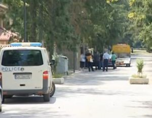
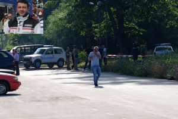
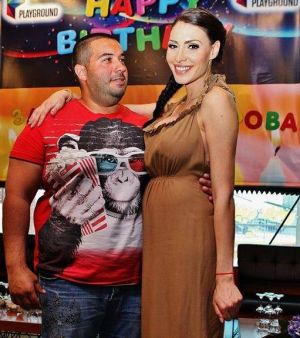

Семко Семков прострелян с пет куршума

Застреляният Семко - зет на дървения бос Барези, двамата били №1 в обществените поръчки на Ботевград
Последното интервю на убития Семко Семков: Исках да не преча на никого

Златка Димитрова проговори: Боли, видях бебето!
1
2
3
4